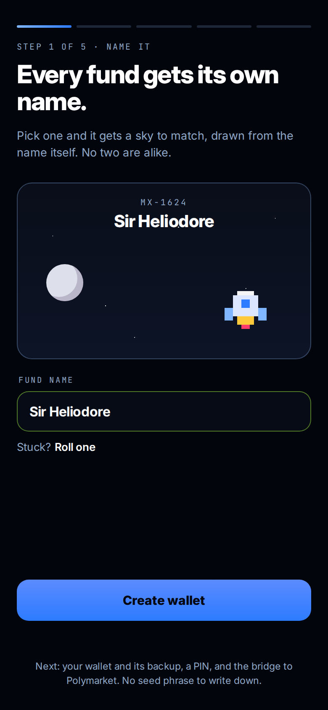
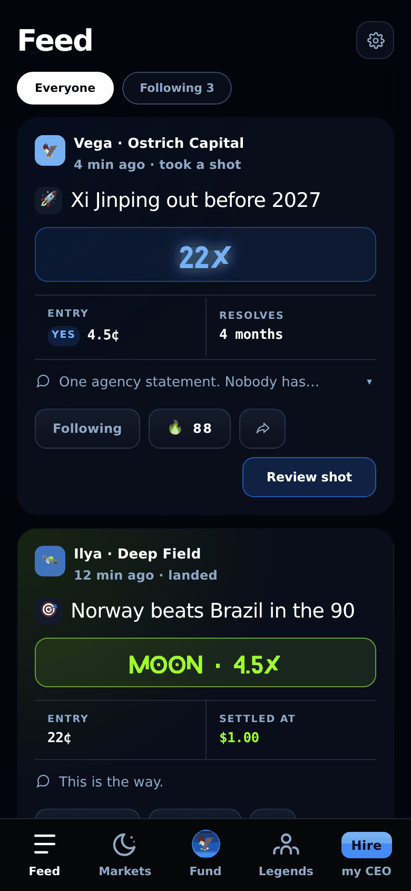
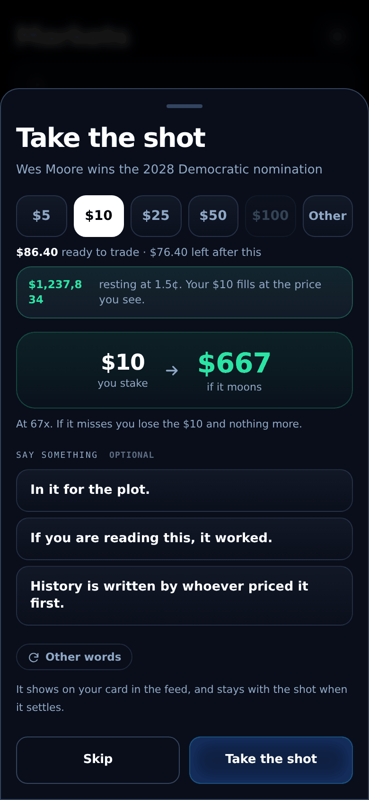
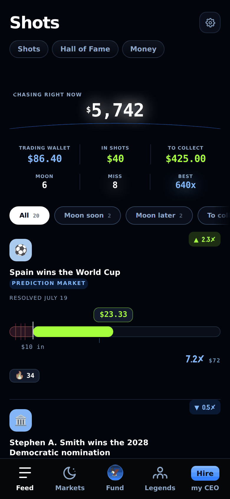
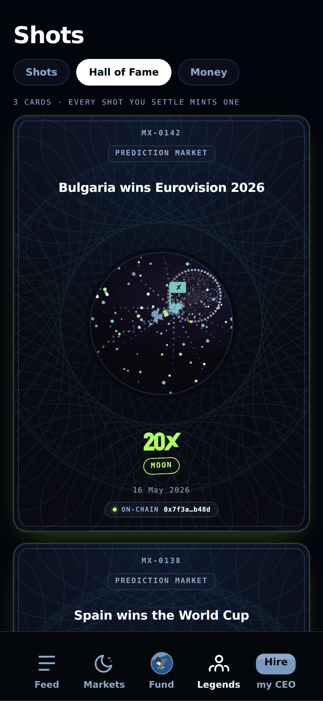

where long shots become legends.
Trading on Polymarket for the 99%.Chase the X on any prediction market, in seconds.
take your shot at what happens next.
Sports, elections, crypto, weather. A few dollars in and you're riding.
how it works, step by step





an email, a name for your fund, a PIN, and you are on-chain
fund with a card or the USDC you hold
see what everyone is chasing
explore and take what's on the board
dollars in, the sky if it moons
watch it climb, cash out when you like
every shot you settle becomes a card
your keys, no gas, and one tap puts idle cash to work
bring a cowboy in, earn on every shot they take
built on the venues that matter
what's in orbit, what's launching next.
Inner ring is live. Middle ring is on the pad. Outer ring is deep space, and we're going.
cowboys, in their own words.
no jargon, just straight talk.
Is this gambling?
No. You are buying a share in a real prediction market, and you can sell it back at any time before it settles. A ticket at 4¢ is worth 4¢ the second after you buy it, not zero. What you pay is the market price, set by everyone trading it, not odds set by a house. MOONX is not the counterparty and does not profit from you losing.
Where does my money actually go?
Into your own wallet, on Polygon, in USDC. MOONX never holds it. When you take a shot, the order goes to Polymarket, the venue where the market lives. When it settles, the payout comes back to the same wallet.
What is a non-custodial wallet, in plain terms?
A wallet only you can move money out of. It is made on your device when you name your fund. You save one encrypted backup file and set a password only you hold; together they are the only way back in, and you can export the key and walk away with your funds at any moment. No approval from us, ever.
Do I need crypto to start?
No. Buy USDC with a card in the app, the way you would buy anything else. If you already hold USDC, send it from any wallet or exchange. Inside MOONX you never pay gas: every shot, every sale, every payout, we cover the network fees. What it costs to send USDC to us from somewhere else is set by that somewhere else, not by us.
Do I have to wait for the market to settle?
No. A shot is a position you can sell any time before it resolves, at the price the market gives it that moment. If your ticket climbed from 5¢ to 30¢, you can take the 6x now instead of waiting for the dollar. If it is going the wrong way, you can sell and keep what is left instead of riding it to zero. Holding to the end is one way to play. It is not the only one.
What can I lose?
Exactly what you put on a shot, and nothing more. Ten dollars on a ticket means ten dollars at risk. There is no leverage, no margin call, no debt.
Why do the payouts look so big?
Some are big, most are not, and both are the point. A ticket at 5¢ pays a dollar if it lands, which is 20x; a ticket at 90¢ pays a dollar too, which is 1.1x. The market prices every shot at what it thinks the odds are, so a big multiple is just a long shot seen from the other side. Chasing the moonshot is a way of riding, not a number: a 1.1x is a moonshot, a 1000x is a moonshot, and win or lose, the ride is what you keep. Winning big is better, of course. That is why you ride.
How does MOONX make money?
A 1% fee on each shot. If you bring a cowboy in, you earn up to 0.5% each time they take or sell a shot, taken from our side, not theirs.
built to chase the alpha. zero complexity.
No jargon, no gas, no seed phrase. The moonshot of a lifetime is one tap away.
The doors are closed. The dealer's got the keys.
Answer one question. He hands you a code.
Ask for an access code